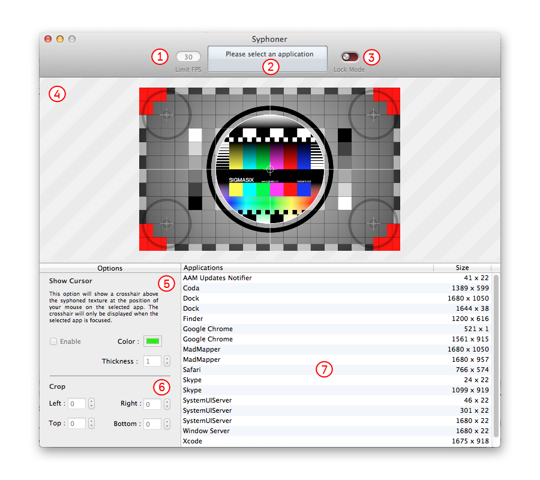

Syphoner gives the ability to share the graphical window's content of any open application and stream it in real-time, full frame, to any Syphon client applicaton. You can browse the web or draw a vector mask in your favorite software, and display instantly the result into your VJ or projection tool app.
Syphon is an open source Mac OS X technology that allows applications to share frames - full frame rate video or stills - with one another in realtime. (http://syphon.v002.info).

Set the maximum frame rate (upper limit).
This is the main information box.
It displays the name of the selected application, its size and the current frame rate. Also, all errors will be reported in this box.
Switch to lock mode in order to minimize the user interface and to get the best frame rate and performance.
Once you have selected an application in the list and you're done with settings, you can switch into Lock Mode.
Press ⌘L shortcut to toggle modes.
It's the real-time preview of the syphoned content.
A very helpful crosshair cursor. The cursor appears only when the selected application is focused.
Use crop margins to only use the POI of the selected application's window.
For example to remove window's borders or crop a specific region of interest.
The applications list displays all running applications and their windows on your computer.
Just pick an application and it starts the "Syphonisation". You can see the real-time result in the preview area.
By default, Syphoner displays a standard test pattern at startup when no apps are selected or when you close the source application.
The preferences panel contains advanced settings.